1概览
歌唱吧，缪斯，歌唱阿尔刻德斯（Alcides）——一个被罪疚缠绕的半神，为往昔之罪所折磨。因赫拉（Hera）的嫉妒降下诅咒，又被女神逼至疯狂，他杀死了妻子墨伽拉（Megara）与三个孩子。从暴行中惊醒，他自我放逐，前往德尔斐神谕（Oracle of Delphi）寻求新家与赎罪之路。
神谕赐他新名——赫拉克勒斯（Hercules），"赫拉之荣耀"，命他前去侍奉叔父欧律斯透斯王（King Eurystheus），完成加诸其身的试炼。唯有功成，方能获赦、得安，并于奥林匹斯众神之中不朽。
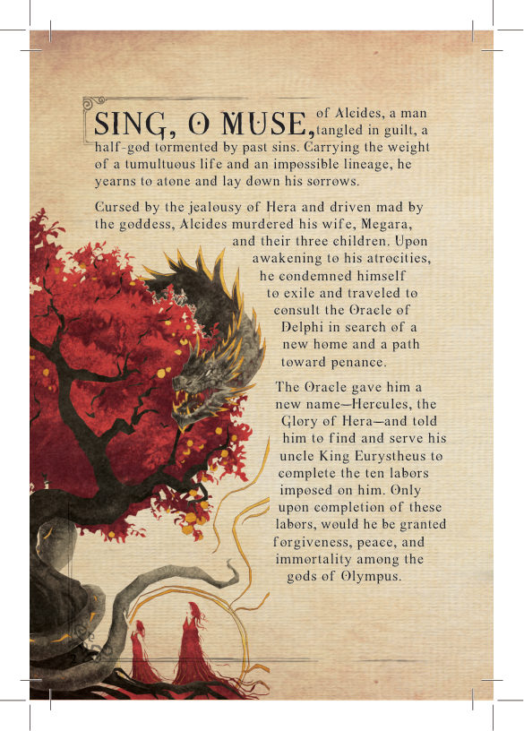
2组件
含试炼卡、传说卡、情绪卡与奖励卡（详见"卡牌解剖"）。
追踪你的精神，以及你在神性轨道上的进度。
承载你每次掷骰可使用的蓝格骰子能力。
引入每一道试炼及其故事。
9 张常规 + 4 张特殊（3 张群鬼系列 + 阿特拉斯之重），会改变每道试炼的胜负天平。
每道试炼的攻击系统、生命与影响（正面）；奖励（背面）。
11 颗赫拉克勒斯骰子（绿）+ 4 颗试炼骰子（金）。
用于精神 / 神性追踪板。
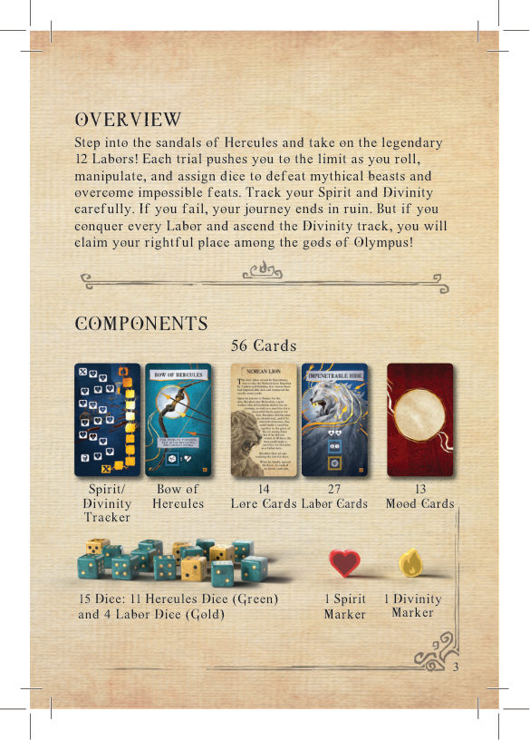
3准备
按以下方式分牌：
- 试炼牌堆（The Labor Deck） —— 传说卡与试炼卡共同组成试炼牌堆，已预先排好顺序（卡牌左下角编号 1–41）。
- 情绪牌堆（The Mood Deck） —— 挑出 4 张特殊情绪卡（Weight of Atlas、Ghost of Hippolyta、Ghost of Pholus、Ghost of Abderus）放在一旁，游戏中逐步加入；其余 9 张洗匀置于一旁。
- 赫拉克勒斯卡牌 —— 将"赫拉克勒斯的弓"与"精神 / 神性追踪板"置于面前；将精神与神性标记放在各自的起始格（标 X）。
- 起手 4 颗绿色赫拉克勒斯骰子。其余赫拉克勒斯骰子与 4 颗金色试炼骰子放入供应区。
- 阅读涅墨亚雄狮（Nemean Lion）传说卡，将涅墨亚雄狮试炼卡置于面前；从供应区取 1 颗金色试炼骰子放在卡上的骰子格，点数与所示一致（涅墨亚雄狮为 6）。
难度
| 模式 | 起手骰子数 |
|---|---|
| 人类（Human） | 5 颗 |
| 英雄（Hero） | 4 颗 |
| 神（God） | 3 颗 |
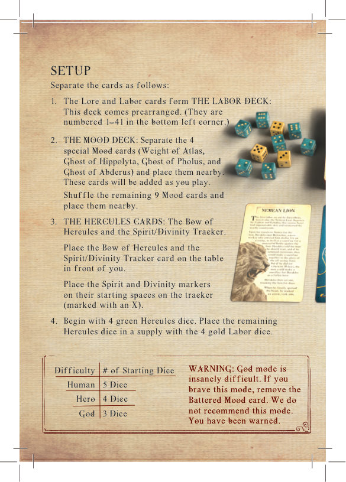
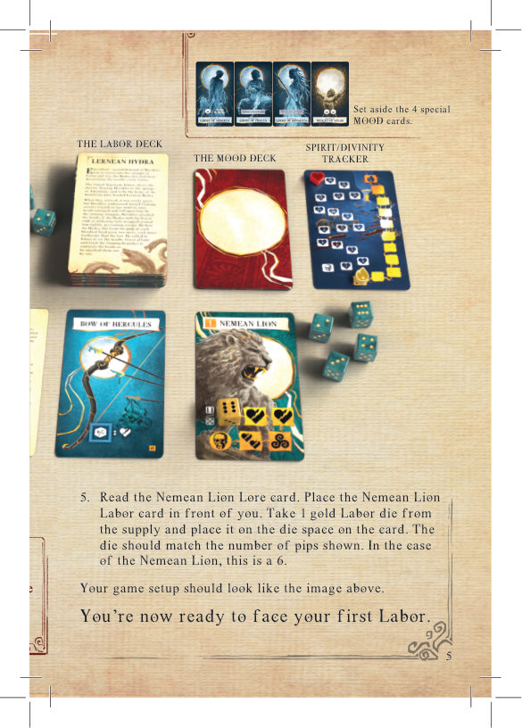
4卡牌解剖
试炼卡（正面）
赫拉克勒斯须完成的试炼编号与名称。
击败该试炼所需的具体骰子点数或组合（白色显示；部分试炼有多个攻击系统）。
试炼的初始生命值，放一颗相同点数的骰子于此（部分试炼需放置多颗）。
重开游戏时维持正确卡序。
试炼骰子到达骷髅图标，则试炼失败、游戏结束。
代表试炼如何影响你（赫拉克勒斯）的图标（见第 13 页）。
奖励卡（试炼卡背面）
从试炼获得的奖励名称。
获得奖励立即享有的好处。
操纵骰子点数。每次掷骰可用一次，先于任何金格能力。
锁定骰子并触发各种效果。每次掷骰一次，在蓝格能力之后。
重开游戏时使用该奖励的代价（见第 11 页）。
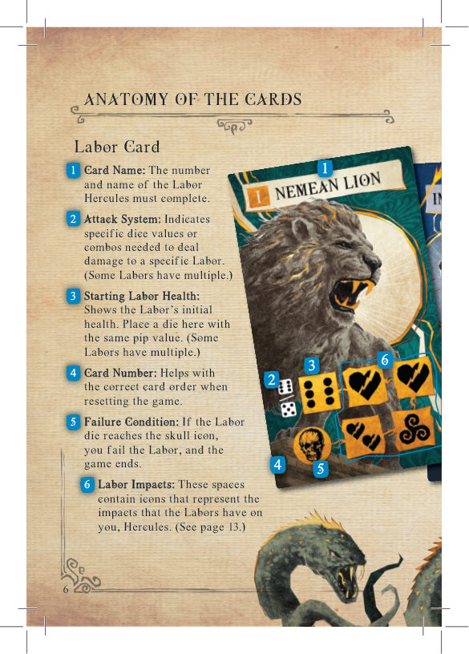
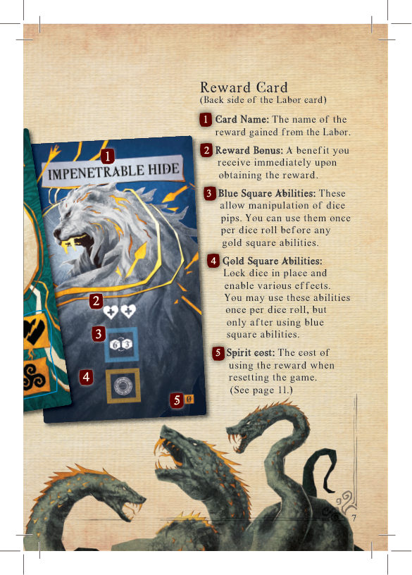
5游戏流程
在《赫拉克勒斯与十二试炼》中，你将迎战 12 道试炼，一道比一道更难。每完成一道试炼，你便获得一份奖励，助你完成后续试炼。
试炼骰子。每道试炼有骰子格，容纳 1 颗或多颗试炼骰子。要完成试炼，必须在它们抵达骷髅之前，将每颗都减至 0。你须用赫拉克勒斯骰子掷出特定结果（攻击系统，白色显示于试炼卡上）来削减；每达成一次，试炼生命 -1。
每道试炼按以下步骤进行：
- 情绪卡 —— 抽并结算一张情绪卡（见上）。
- 掷出你可用的赫拉克勒斯骰子。
- 操纵骰子 —— 可将赫拉克勒斯骰子放在任意蓝格，触发赫拉克勒斯的弓及 / 或已解锁奖励卡上的能力（见第 14–15 页）。
- 放置骰子 —— 将赫拉克勒斯骰子放在金格（触发能力）或试炼卡上（造成伤害）。金格上的骰子不能用于造成伤害；试炼卡上的骰子对该试炼造成伤害（见第 16 页）。
- 若试炼骰子减至 0 —— 试炼被击败。翻面试炼卡，从翻出的奖励卡中选 1 张，弃掉其余；将新奖励与既有奖励并列，并获得奖励加成（见第 13 页），随后进入下一道试炼。
- 若试炼骰子未减至 0 —— 将试炼骰子推进至下一格。所经格上的图标（试炼影响）立即结算（见第 13 页）。
- 若精神尚存 —— 收起你可用的赫拉克勒斯骰子，回到步骤 2。
- 若精神减至 0 —— 旅程结束。你已失败，不被众神接纳。
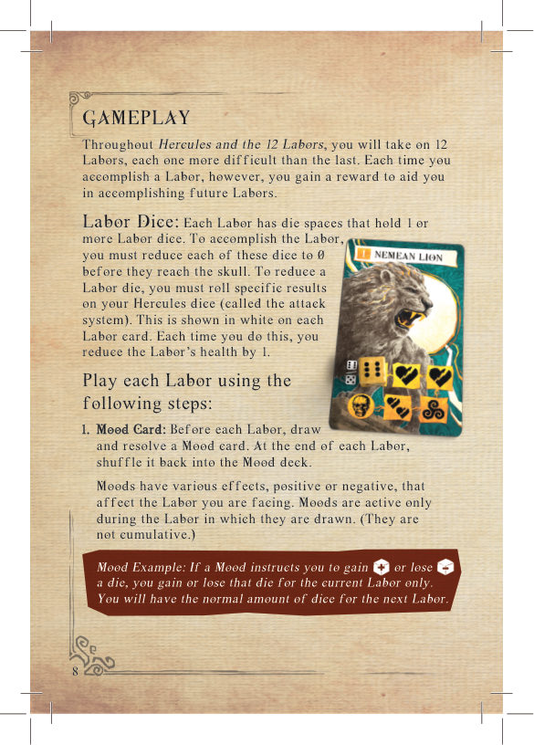
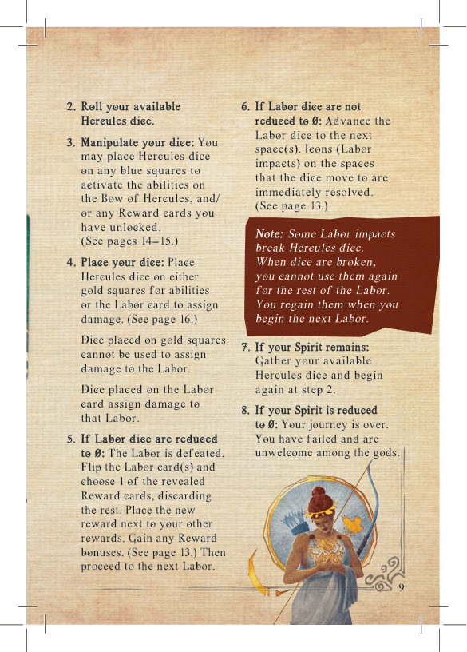
6骰子能力
蓝格能力让你在掷骰后操纵骰子。将一颗骰子放在蓝格以改变其点数。每个蓝格每次掷骰可用一次；一旦某颗骰子被放入蓝格，便不能再用于其他蓝格能力。你必须先使用蓝格能力，再使用金格能力。
金格能力在蓝格之后：用你刚调整过的骰子以及任意未使用的骰子触发金格效果（格挡伤害、获得神性或恢复赫拉克勒斯的精神）。每次掷骰只能用一次。用于金格能力的骰子被锁定，无法对试炼造成伤害。结算完蓝、金格后，将剩余未用的骰子放在试炼形象上以造成伤害。
蓝格能力
金格能力
金格提供三类效果。将一颗与图标匹配的骰子放入金格以获得所示效果；该骰子在本掷中被锁定。
每 盾 图标防止赫拉克勒斯失去 1 点精神。
每 心 图标为赫拉克勒斯恢复 1 点精神。
每 焰 图标为赫拉克勒斯获得 1 点神性。
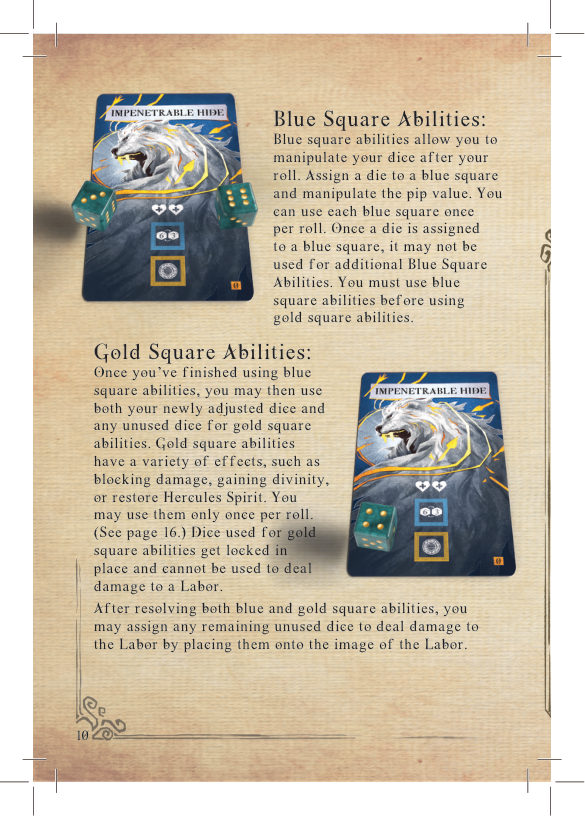
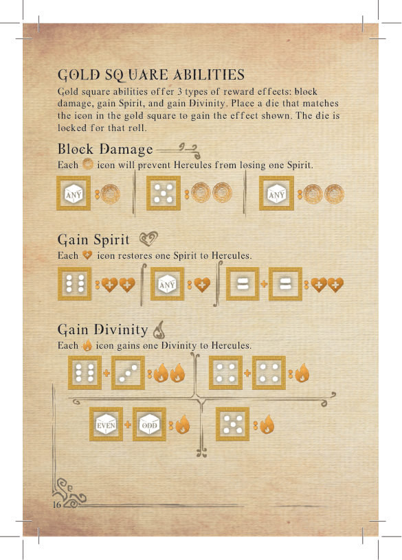
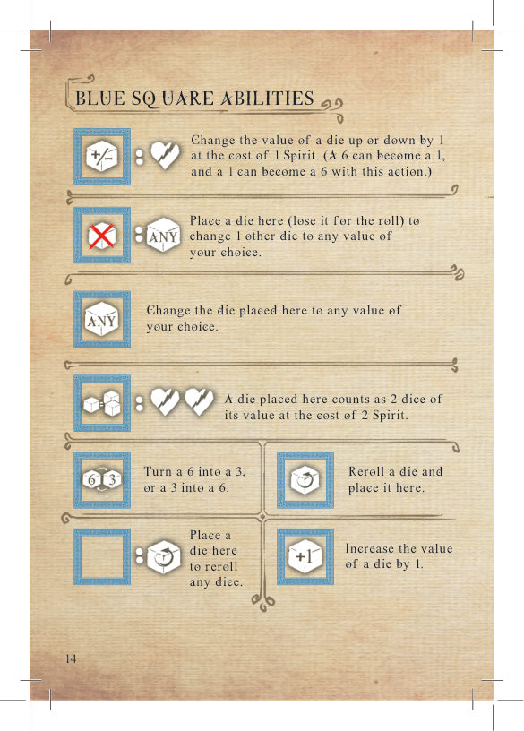
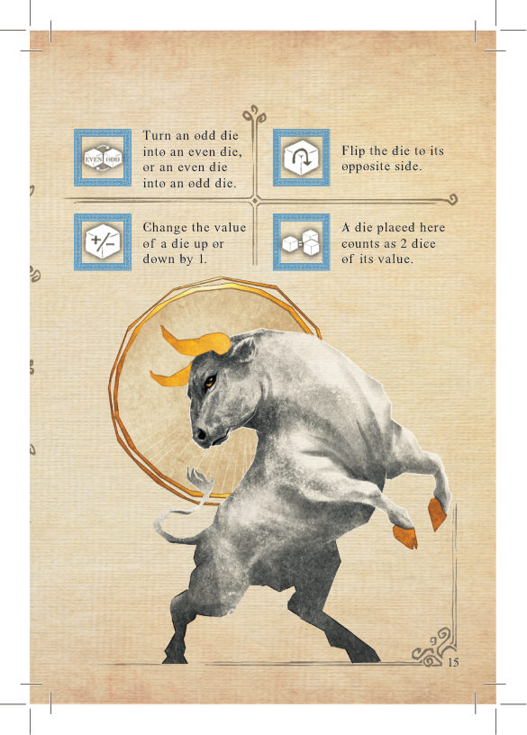
7攻击系统
掷出试炼卡上所示的具体结果以造成伤害。每张试炼卡上的白色符号表示它接受哪些结果：
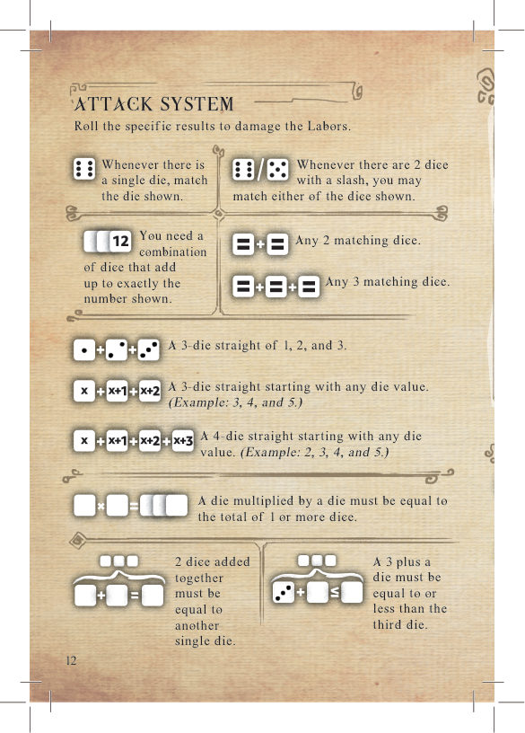
8试炼影响与奖励加成
试炼影响
这些图标出现在试炼卡上，当试炼骰子移动至其所在格时结算。
奖励加成
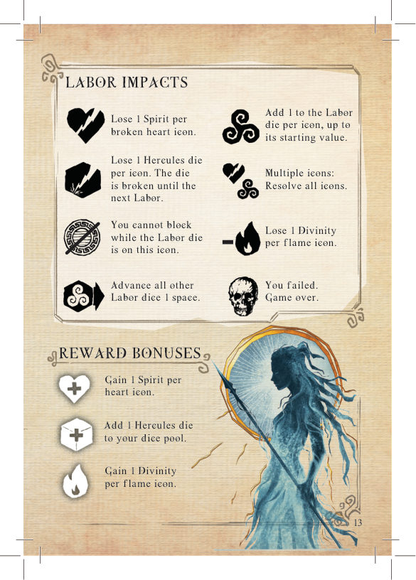
9规则澄清
- 有时某张卡会指示你移除一张先前的奖励卡或某张指定情绪卡（永久）。卡牌也可能指示你向情绪牌堆加入一张特殊情绪卡。情绪牌堆中的卡数永远不会超过 9 张。
- 试炼卡上有闪电引导试炼骰子推进。骰子始终沿闪电路径由粗到细前进。部分试炼提供多条路线——到达分支点时，自行选择试炼骰子下一步落向哪一格。
- 若试炼骰子触发试炼治疗效果，不会超过其初始生命值。例（×2）：克里特公牛（Cretan Bull）初始值为 12——在起始处叠放 2 颗点数为 6 的骰子。
- 若你有多个试炼骰子要击败，且掷出多颗可造成伤害的骰子，伤害可任意分配。
- 厄律曼托斯野猪（Erymanthian Boar）、斯廷法利斯湖怪鸟（Stymphalian Birds） 与 革律翁的牛群（Cattle of Geryon） 较为特殊：各需 2 种以上不同的攻击系统结果才能击败，且必须按其各自试炼轨道上每一步使用指定结果。
- 忧郁（Melancholic）情绪卡：每次掷骰时所有骰子 -1（最低 1）。重掷效果不 -1。
- 暴怒（Enraged）情绪卡：每次掷骰时所有骰子 +1（最高 6）。重掷效果不 +1。
- 被福罗斯之鬼（Ghost of Pholus）缠身：选 1 张你的奖励卡，将本情绪卡覆于其上以封锁其使用。该情绪卡在试炼结束时移除并洗回情绪牌堆。
- 被希波吕忒之鬼（Ghost of Hippolyta）缠身：每当你掷出 1，立即将其移开，当前掷不可使用——即便重掷后仍掷出 1 也如此。
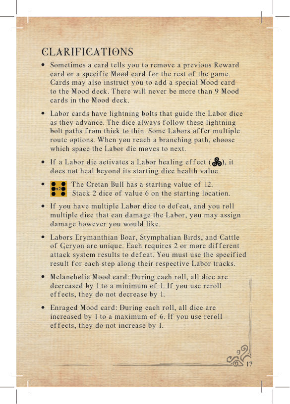
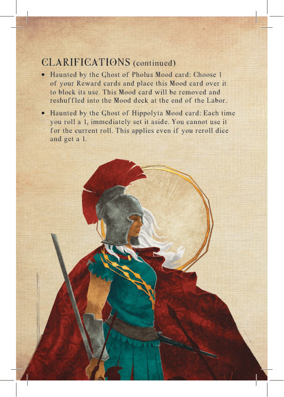
10终局
从任意试炼开始
若你某道试炼失败但仍想继续，或想暂停后不从头重来，可按以下方式：
- 照常设置游戏。
- 取试炼卡，并收集你想开始的试炼之前的所有奖励卡（例如从第 8 试炼开始，则收集第 1–7 试炼的全部奖励卡）。
- 选择你想保留的奖励卡，同时从其精神轨道减去每卡右下角所示的精神消耗。每道试炼你至多只能保留 1 张奖励。
- 获得所选奖励卡的赫拉克勒斯骰子与奖励加成，但忽略任何精神加成。
- 按所选奖励卡指示加入必要的情绪卡。忽略任何会令你"移除：一张先前奖励"的效果。
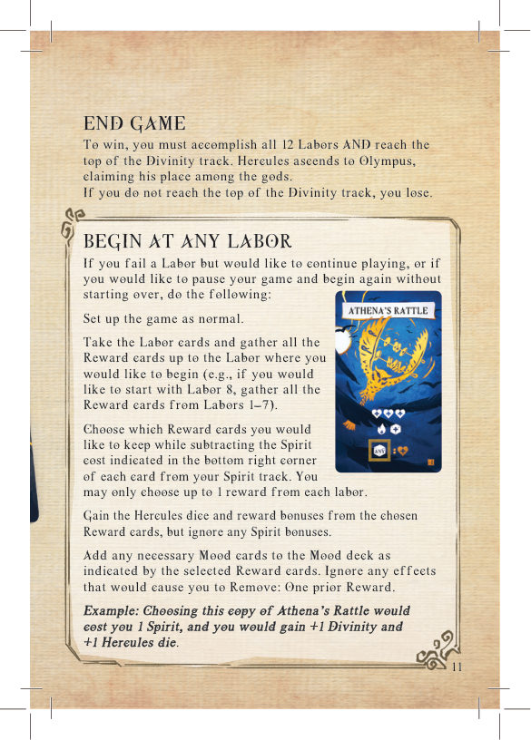
11设计者笔记
Hercules、Heracles，还是 Herakles？
许多人知道 Hercules，但有多少人知道他本名 Heracles 或 Herakles？我们钟爱这位强大而受折磨的半神的希腊神话与传说。尽管我们更偏好希腊拼写与读音 Hera-kles（"赫拉之荣耀"），以及这名号所承载的赫拉对他的恨意，我们仍选择使用罗马化拼写 "Hercules"，以触及尽可能广泛的读者。
推荐阅读
这款游戏灵感来自无数关于赫拉克勒斯生平、试炼与挣扎的素材与重述：
- 阿波罗多洛斯（Apollodorus）著《希腊神话文库》（The Library of Greek Mythology）
- 斯蒂芬·弗莱（Stephen Fry）著《英雄：重述的希腊神话》（Heroes: The Greek Myths Reimagined）
- 爱德华·库尔（Edouard Cour）著《赫拉克勒斯》
特别致谢
设计者感谢他挚爱的妻子 Francesca 持续的的支持与试玩，也感谢其余家人与两只猫儿子 Zazu、Prufrock。同时特别感谢 Alan Gerding、Delton Brack、Dominick Duhamel、Paul Marchbanks 与 Luke Otfinowski 以各种方式的持续支持。
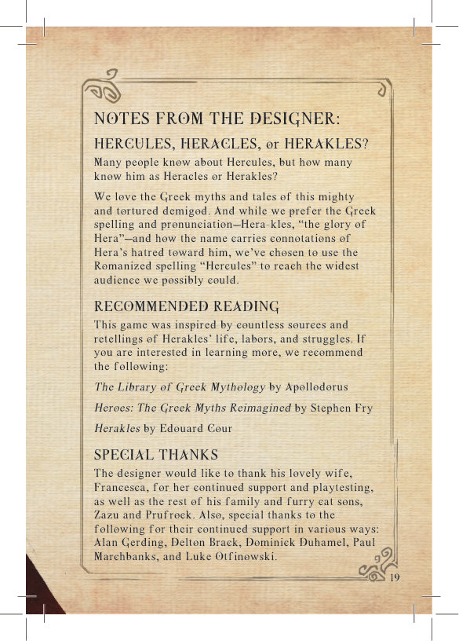
12制作人员
游戏设计：Tyler J. Brown
插画：David Schneider
平面设计：Ammon Anderson
规则书：Ammon Anderson & Mathue Ryann
规则书编辑：Dan Varrette
© 2025 Envy Born Games, LLC. 保留所有权利。
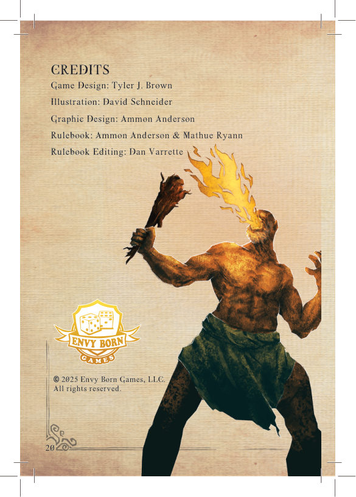